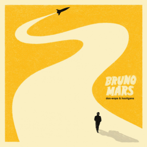

okay.. I did not plan this
but I made this specifically just for you.
okay.. I did not plan this
but I made this specifically just for you.
there's some stuff i've been meaning to tell you for quite a bit already…
Edi 'wag 😒
some of the little things that added up to this.
okay.
this is the part where i stop pretending this is just a cute website.
so…
tap to keep reading
Tadaaa
tap the envelope to open it

Heart for free dubai chewy cookie